What an input does is a list of actions. Here is how they run, how modes and modifiers change them, and what each of the 26 actions does.
Basics
How actions run
Select an input on the Devices page and its actions are on the right. They run from top to bottom every time the input changes, and each one can pass a changed value on to the next one: a response curve before Map to virtual stick, for example. The plus button adds an action. It can also link an existing action, so several inputs share it, or copy one.
When it runs. Button actions have three switches: on press, on release, or both. Both follows the button, so a vJoy button is held exactly as long as yours.
Containers. Some actions hold other actions: tempo, double tap, condition, split axis and others. Their children are edited inside them.
Names. The name above the list names the input; it also shows on the input's card. It, the title of every action and description notes read as text: click one to edit it, then press Enter or click elsewhere.
Voice command. A named button-like action (a vJoy button, a key, a macro and the like) has a microphone with a plus next to its bin: it makes a voice command that says the name and runs that action. With an arrow instead, the action already has one, and a click goes to it. See Voice commands.
Numbers. Type a value, click the arrows, or turn the mouse wheel over the field; Shift moves it ten steps at a time.
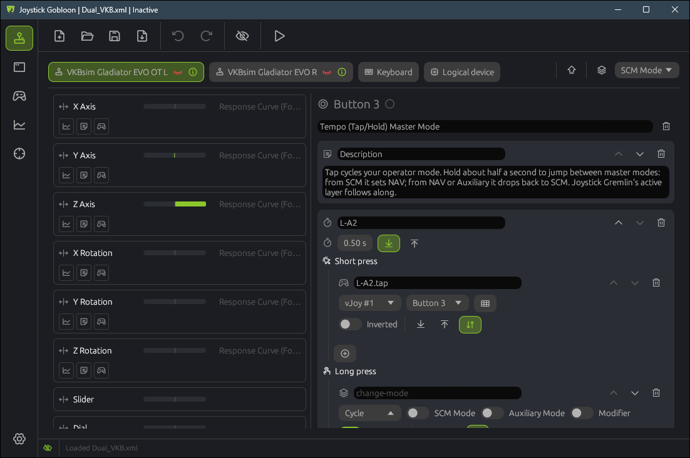
Modes
A profile can have several modes, and each mode can give an input different actions. A mode inherits everything from its parent and overrides only what you change in it. Switch modes with the Change mode action or the mode selector in the toolbar.
Modes are added, renamed and given a parent in the Modes window: click the icon next to the mode selector. Pick the parent under Inherits from; a mode without one starts empty.
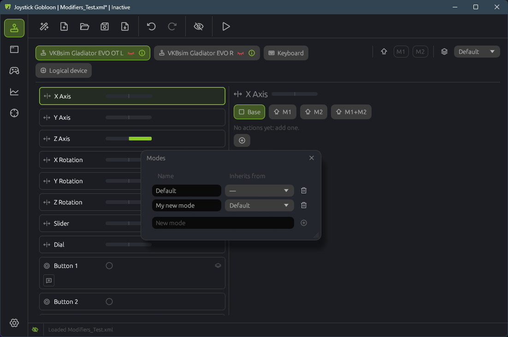
Modifiers
Name a few buttons as modifiers (M1, M2 and so on): press Add a modifier and then the button on your stick. While a modifier is held, every input that has a layer for it runs that layer's actions instead of its base. One button can do different things with nothing, M1, M2 or M1 plus M2 held. Only the layer of the exact combination runs: the M1 layer does not run while M1 plus M2 is held.
Layers are chips above the actions of an input; a dot marks the ones in use. Inputs without layers ignore modifiers.
An additive layer runs together with the base instead of replacing it, for example an axis that drives a second output only while M1 is held.
A button keeps the layer it was pressed in until it is released, so letting go of the modifier first never leaves anything stuck. Outputs of a layer that stops go back to rest.
An axis layer can keep the last value: a trim axis on M1 holds its setting after M1 is released, and the main axis on the base holds its position while M1 is held.
Held modifiers light up next to the mode selector; the button of a modifier shows a lock and runs no actions.
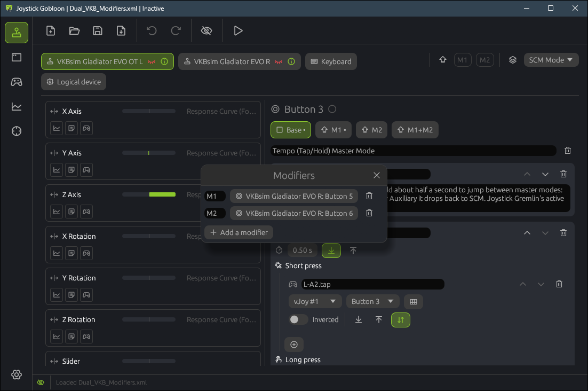
Output
Map to virtual stick
Sends the value to a virtual joystick: an axis to an axis, a button to a button, a hat to a hat. Pick the virtual stick (vJoy device on Windows) and its input; a button can be inverted, and How to send sets how it follows the input. An axis can also be relative: then the input sets the speed at which the virtual axis moves, and the axis stays where it is when you let go.
A new Map to virtual stick starts on the virtual stick you picked last and its first output that nothing else uses yet. The grid button next to the lists shows every output of each virtual stick at once, and a click picks one. There and in the output list, outputs other inputs already use are blue, outputs that several inputs running at the same time write are amber, and a tooltip names the inputs. Outputs that another action of the same input already writes are grayed out: two actions of one input never write the same output. If a profile already has that, a warning sign shows next to the action. A copied Map to virtual stick moves to a free output by itself.
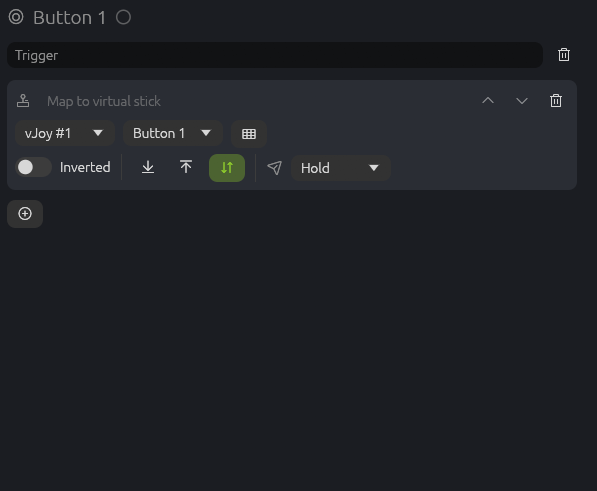
Map to gamepad
Linux only for now. Sends the value to a virtual Xbox-style gamepad: games, Steam and Proton see an Xbox 360 controller, so a game that only understands gamepads can be played with a stick. Add the gamepad on the Virtual joysticks page first (up to four), then pick it and a control that suits the input: a button presses a gamepad button, a d-pad direction or a trigger; an axis moves a stick axis or a trigger (the whole axis range becomes the trigger's travel); a hat drives the d-pad. Buttons and axes can be inverted; for a button, How to send sets how it follows the input.
Picking the control works like Map to virtual stick. A new one starts on the gamepad you picked last and its first free control. The grid button next to the lists shows the controls of every gamepad at once, and a click picks one. Controls other inputs already use are marked the same way.
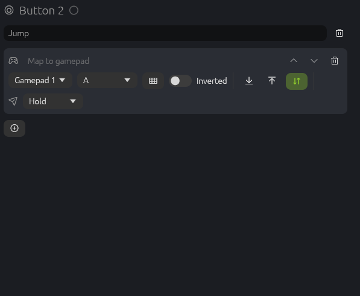
Map to keyboard
Presses keys while the input is held: they go down in order and come up in reverse order. Click the record button and press the keys together; recording ends when all are let go. Keys most keyboards lack, F13 to F24 and the media keys (play/pause, next and previous track, volume, mute), are in the list behind the … button. If the input is let go in another mode, the keys still come up. How the keys follow the input, held, pulsed, repeated or toggled, is set with How to send.
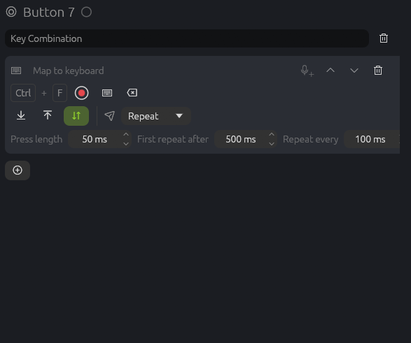
Map to mouse
A button clicks a mouse button (left, right, middle, back, forward) or turns the wheel one notch; How to send sets whether it is held, pulsed, repeated or toggled. An axis or a hat moves the cursor instead: set the direction and the speed range; the further the axis is pushed, the faster the cursor moves.
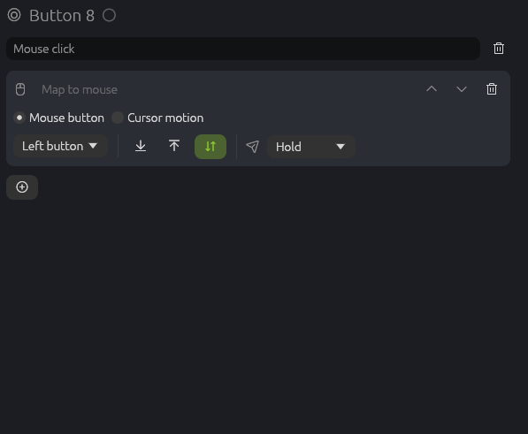
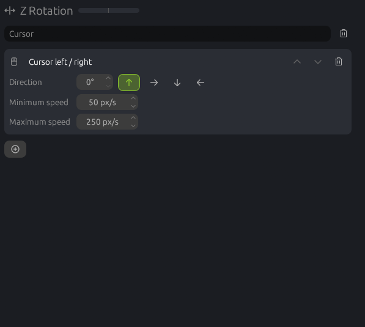
Map to logical device
The Logical device tab is a joystick that only exists inside the profile. Mapping inputs to it lets several physical inputs feed one logical input, whose own actions then do the rest. Logical inputs are added and renamed on that tab.
Picking the input works like Map to virtual stick. A new one takes the first logical input of that type nothing uses yet, or adds one. The grid button next to the list shows every logical input of that type at once, and a click picks one. Logical inputs that other inputs already write to are marked the same way.
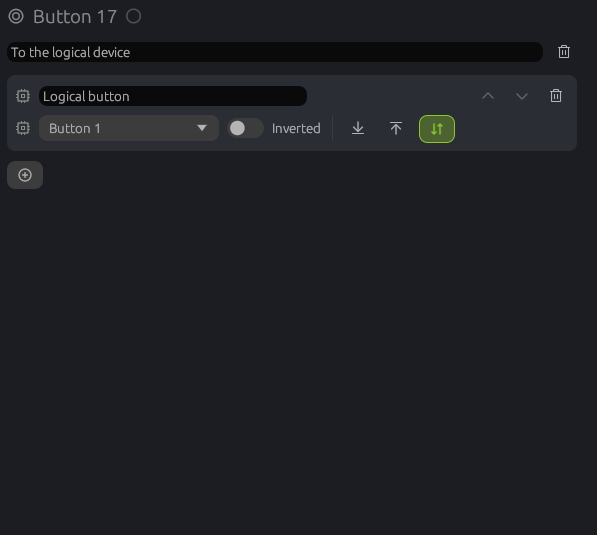
How to send
When a button drives a key, a mouse button or a button of a virtual stick or gamepad, the list next to the paper plane sets how the output follows it:
Hold: down while the input is down. This is the default.
Press only: the input presses it and it stays down; another input set to Release only lets it go.
Release only: the input lets it go.
Pulse: one press of a set length, however long the input is held. 50 ms, the default, suits most games: a shorter press may come and go before the game looks.
Repeat: presses it again and again while the input is held: the first repeat after a delay, then at a steady pace. The mouse wheel turns notch after notch this way.
Toggle: the first press holds it down, the next one lets it go.
Whatever is still down when the profile stops or another profile starts is let go, so nothing stays stuck.
It is in the pictures of every output above; Map to keyboard shows Repeat with its times.
Axis from buttons
Buttons move an axis: a throttle on two buttons, a trim wheel on an encoder, detents for flaps. The axis can be on a virtual stick, a stick or trigger of a virtual gamepad, or the logical device; the icons in the first row pick which, and the outputs are picked as in Map to virtual stick.
The button the action is bound to moves the axis up. The second row names the input that moves it down: click the record button and press a button on any stick, or a key. It runs in the same mode and with the same modifiers as the action. Click its name to go to that input; on the Devices page its card shows a down arrow chip, and selecting it links back to the action.
How the buttons move it:
Set value: a press sets the axis to a value, the down input to its opposite. With Back on release the axis returns to where it was when the button is let go.
Velocity: the axis travels while a button is held, at a speed in percent of the full travel per second, faster with the acceleration, up to the top speed.
Steps: each press moves to the next position, and stops at the last one. Click the strip to add a position, drag one to move it, right click one to remove it; the count and the dots button spread that many positions evenly.
Encoder: each press moves one step, a bigger one the faster the presses come, up to the largest step at the rate set. With Back to rest after the axis returns to its start value, or else to the center (a trigger to released), when no press has come for that long.
Smooth: each press moves the target one step and the axis glides there within the response time.
The axis keeps its position when the mode changes. Turn on Start value to put it somewhere when the profile starts; off, it stays where it was.
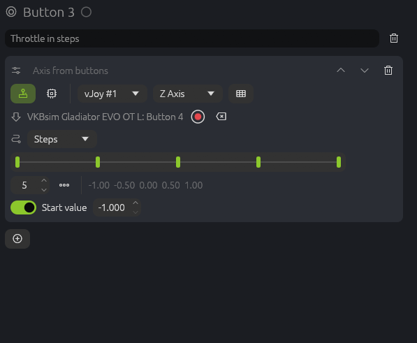
Axes
Response curve
Shapes an axis: how far the virtual axis moves for each position of the stick, for example softer around the center and quicker toward the ends. Put the curve before Map to virtual stick, which then sends the shaped value.
Move a point: drag it.
Add a point: double click in the chart where it should go.
Remove a point: right click it.
Invert the curve: right click on empty space, or the Invert button. A switch in the settings turns the right click off.
Symmetric: your edits are mirrored through the center.
The Curve type list sets how the curve runs through its points:
Piecewise linear: straight lines from point to point.
Cubic spline: a smooth curve, but it can swing past its points, turning back or running into the end of the axis.
Smooth, no overshoot: a smooth curve that stays between its points.
Cubic Bezier spline: a smooth curve shaped with handles next to each point.
The deadzones below the chart set where the axis does nothing: at both ends and around the center.
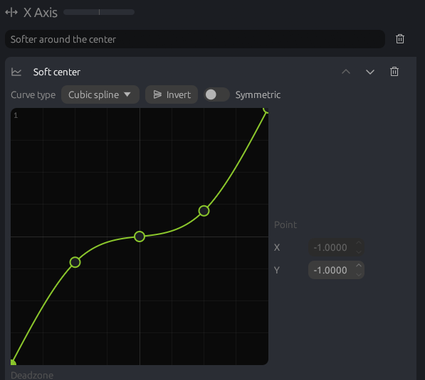
Split axis
Splits an axis at a point (the center by default) into two halves, and gives each half its own actions; each half is stretched to the full range again. Useful for one axis driving two outputs, like two pedals on a single rudder axis.
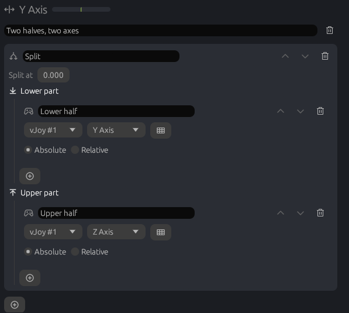
Merge axis
Combines two axes into one value: average, minimum, maximum, sum, difference (for two pedals as one rudder), the one deflected most, or the one closer to the center. It runs when either axis moves, so it is bound to both: picking an axis in its editor binds it there and takes it off the axis it no longer reads, and linking a new merge to another axis makes that its second axis. A merge reads two axes, so it cannot be linked to a third one.
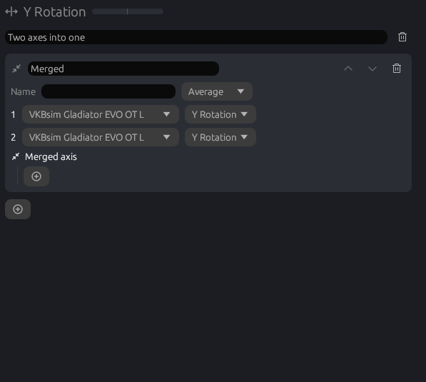
Dual axis deadzone
A round deadzone for two axes of one stick (X and Y), instead of a square one per axis: the stick has to leave a circle of the inner size before either axis moves. Each axis then goes to its own list of actions.
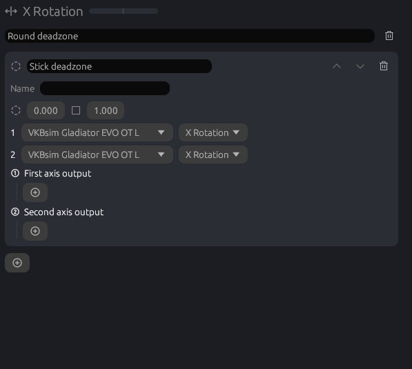
Axis delta
Turns movement into button presses: every time the axis has moved by the threshold, it presses the actions of that direction once. Good for a rotary or a slider that should step something up and down.
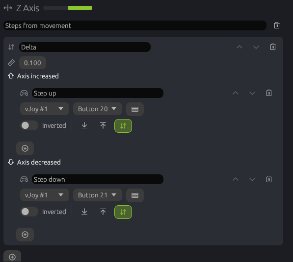
Axis or hat as a button
What it does
An axis or a hat can press a button: a throttle pushed into its last tenth, a rotary turned past a mark, a hat pointing up. Every set of actions on an axis or a hat has a Treat as a button switch above it. Switched on, the set runs as a button: pressed while the axis is inside the range you set (or the hat points one of the ways you pick) and released when it leaves. Everything a button can do works there: a virtual stick button, a key, a macro, a mode change.
To add one, select the axis or hat on the Devices page and click next to (add action): a new set appears with the switch on, ready for button actions. On an axis that already has actions, the switch above them turns those into a button instead.
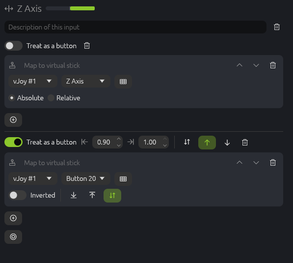
The range
An axis runs from -1 at one end to 1 at the other, 0 in the middle. The two numbers after the switch are the ends of the range, the lower and the upper; a new range is 0.90 to 1.00, the last tenth. Type a value, use the arrows or the mouse wheel; moving one end past the other moves both.
To find the values, move the stick and watch the bar next to the input's name at the top: it shows where the axis is now. Some ranges to start from:
0.90 to 1.00: the end of the travel, for a throttle's detent or an afterburner.
-1.00 to -0.90: the other end, for idle or cut-off.
-0.05 to 0.05: the middle, for a rotary's center click.
Which way the axis moves
Three buttons after the range set when the axis presses:
Either way (the default): pressed as long as the axis is inside the range.
Moving up: pressed when the axis moves up inside the range, released when it leaves the range or moves back down.
Moving down: the same the other way.
With two sets on the same range, one moving up and one moving down, pushing through a detent and pulling back out of it do different things. An axis that jumps over the whole range at once still gives a short press.
One axis, several jobs
An input can have several sets of actions, and each runs on its own. Keep the first set driving a virtual axis and add button sets next to it with : a throttle can move the game's thrust, press one button in its last tenth and another at idle. Ranges may overlap; each set presses its own button.
The bin next to a set's switch removes that set; it shows when the input has more than one. The bin at the top removes all of the input's actions.
Hats
On a hat, the switch is followed by its eight directions and the center: pick the ones that press the button. Several picked directions make one button, so up, up-left and up-right together press it whenever the hat leans up. Two sets give a hat an up button and a down button that also work on the diagonals.
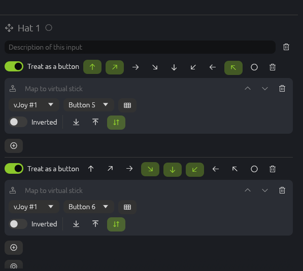
For one button per direction, Hat buttons is quicker: it splits the hat into four or eight buttons in one action.
Good to know
Once the switch is on, the add menu of that set offers button actions; turned off, axis actions again. Actions already in the set stay.
A button set works with modes and modifiers like any other binding.
Joystick Gremlin calls this a virtual button. Imported profiles keep theirs, and they can be edited here.
Related actions: Axis delta presses a button for every step the axis moves, Split axis sends the two halves of an axis to different outputs.
Buttons and hats
Tempo
A short press and a long press do different things. Set the time that counts as long, and whether the long action starts as soon as that time has passed or when you let go.
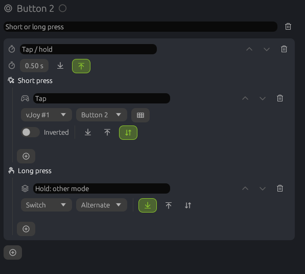
Double tap
A single press and a quick double press do different things. Exclusive waits to see if a second press comes, so a double press runs only the double actions. Combined runs the single actions at once and adds the double ones when the second press comes.
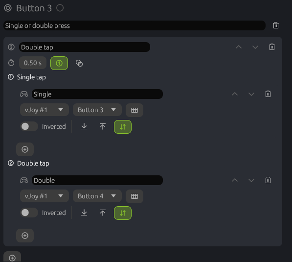
Smart toggle
A quick press switches its actions on until the next press; holding the button longer works like a normal button and lets go with it.
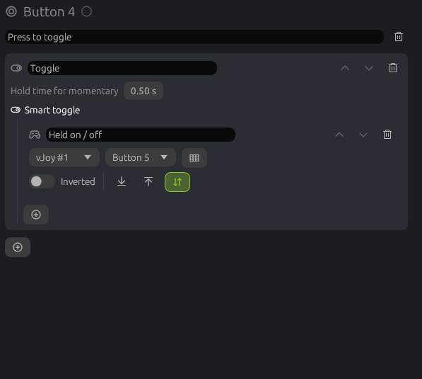
Chain
Every press runs the next step: first press step 1, second press step 2, and around again. With a timeout, a pause longer than that starts again from step 1.
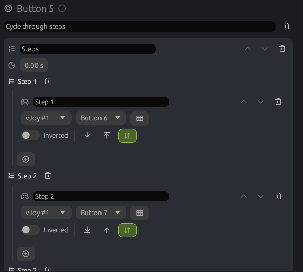
Macro
Plays a sequence of steps: keys, mouse buttons and motion, buttons, axes and hats of a virtual stick, buttons, sticks, triggers and the d-pad of a virtual gamepad (Linux only for now), and pauses. Each step picks its device and output like Map to virtual stick does, with the same grid of outputs and the same marks for outputs other inputs use. It can run once, a number of times, while the button is held, or until the next press.
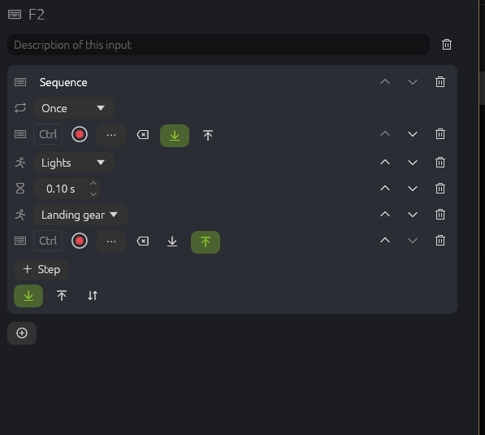
Hat buttons
Makes a hat four (or eight) buttons, one per direction, plus one for the center. Each direction gets its own actions; with four buttons, diagonals press none.
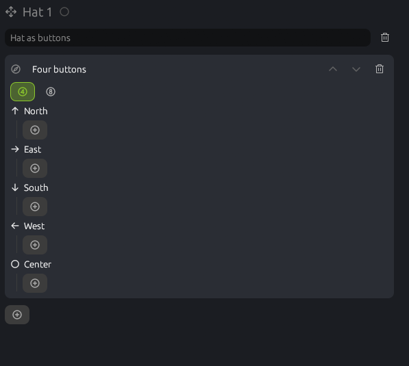
Condition
Runs one list of actions when its conditions hold and another when they don't. A condition can look at a button, axis or hat of any controller, at keyboard keys, at the input itself or at what was last sent to vJoy; all or any of them has to hold. A button keeps the branch it was pressed in until it is released.
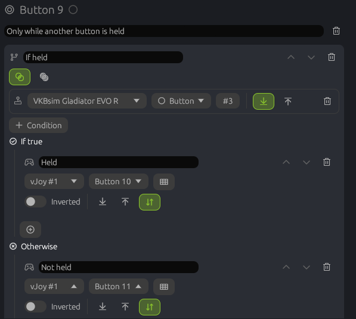
Profile
Change mode
Switches the profile's mode: to a given mode, back to the previous one, back through all previous ones, to the next one of a cycle, or only while the button is held (Temporary).
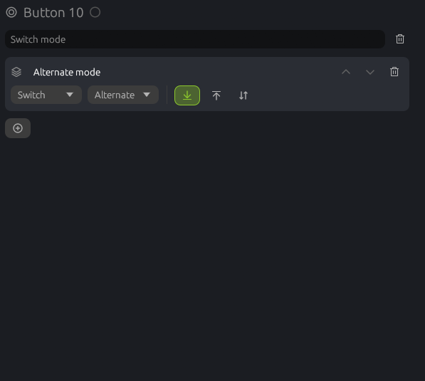
Pause and resume
Pauses the running profile, resumes it, or toggles between the two. While paused, only inputs with this action (and Load profile) still work.
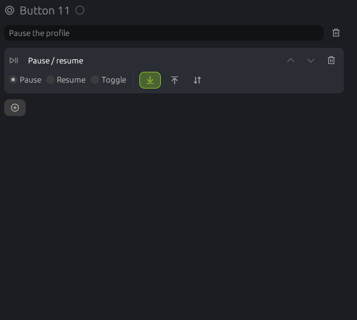
Load profile
Opens another profile and starts it, asking first if the current one has unsaved changes.
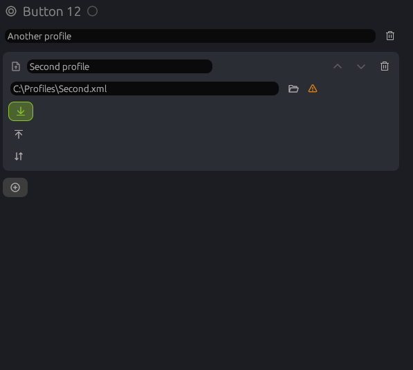
Other
Play sound
Plays a sound file (wav, mp3, ogg or flac) at the set volume; the ▶ button plays it right away.
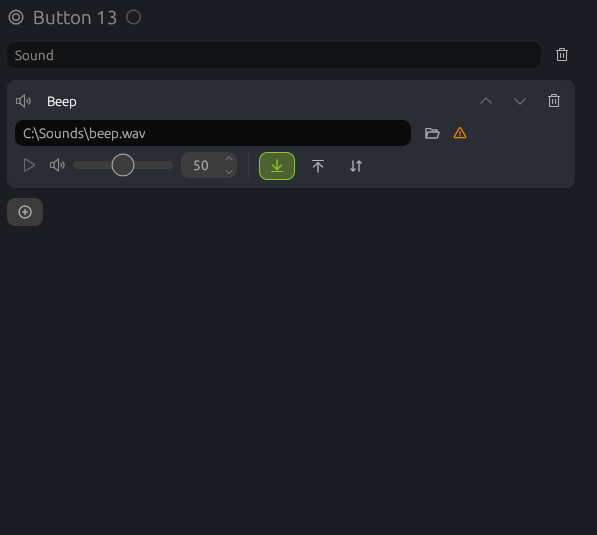
Text to speech
Speaks a text with a voice of the system. ${current_mode} becomes the name of the active mode. Speed, volume and pitch can be set; the new text can wait for the current one or interrupt it.
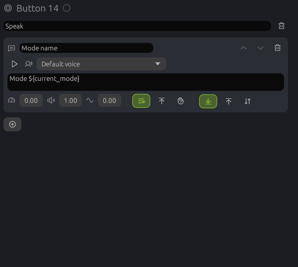
Voice input
Makes its button a push-to-talk button: while it is held, the microphone listens for the profile's voice commands, and a phrase said runs its command when you let go. Choose the microphone, or leave the default one. The commands and their phrases are on the Voice tab of the Devices page; Voice commands shows the whole setup.
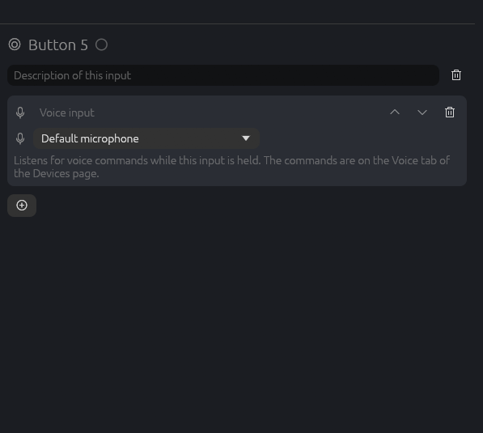
Run command
Starts a program, with arguments if needed.
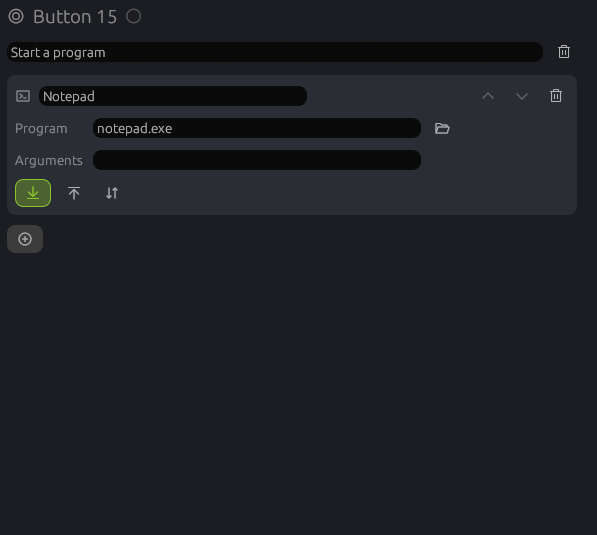
Description
A note that does nothing when the input is used: what this input is for, for you and whoever uses the profile next. It reads as text; click it to edit it.